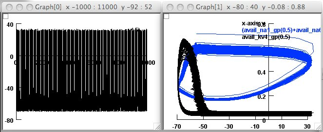
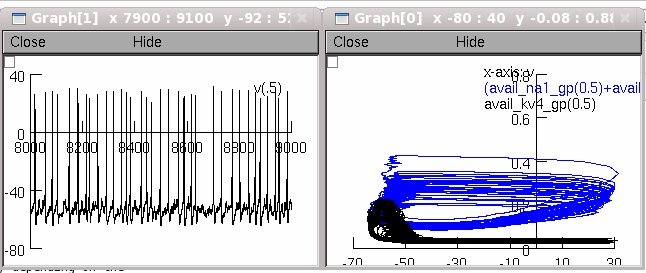

This is the readme for the model associated with the paper Deister CA, Chan CS, Surmeier J, Wilson CJ (2009) Calcium-Activated SK Channels Influence Voltage-Gated Ion Channels to Determine the Precision of Firing in Globus Pallidus Neurons J. Neurosci. 29:8452-8461 Notes: To recreate the simulations found in Figures 7A and 7B of the paper please load either withSKsoma.hoc or noSKsoma.hoc, depending on the condition of interest. This will automatically load a session that will give you a plot of voltage against time on the left and a plot of the availabilities of the Na+ and K+ channels against voltage on the right. If you do this for the withSKsoma.hoc you will see a set of graphs that should look like the following:  Please note that up to the first 5 seconds of the simulation have a subtle slow transient, which may affect your ability to recreate the plot precisely. In our paper, we ran the simulations for 10 seconds and discarded the first 5 seconds. Figure 7 in the paper shows the last second of simulated activity. I have tried to make things easy to obtain a set of graphs that is free of transients and more closely mirrors the paper (random numbers are involved so it will not be exact). To do this load the file as outlined before and close all graphs, then click "init" in the RunControl, then set, in the RunControl dialog, "Continue til" to 8000 ms (should already be done for you) and then click that button. Once the simulation timer "t" reaches 8000 you can then load "availNoTrans.ses" by choosing load session from the File menu and then click in the RunControl "Continue for (ms)," which should be set to 1000. If you do this for the noSKsoma.hoc file, you should end up with a set of graphs that looks like the following:  Please email any questions to chris.deister@utsa.edu. Mod files, with the exception of syn.mod were originally from Mercer et al. (2007) J Neurosci 27: 13552-13566 and at: http://senselab.med.yale.edu/modeldb/ShowModel.asp?model=105385 syn.mod was adapted from a file published by A. Destexhe at http://senselab.med.yale.edu/modeldb/ShowModel.asp?model=64259 and is further commented in the file. Thanks Chris Deister http://marlin.life.utsa.edu/~chris